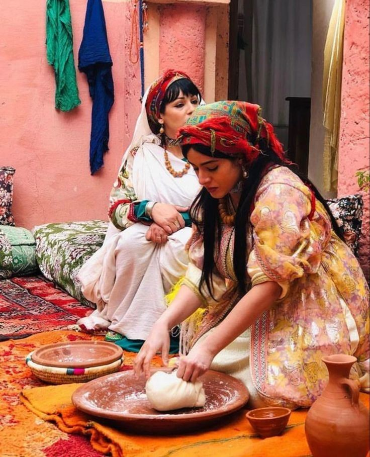
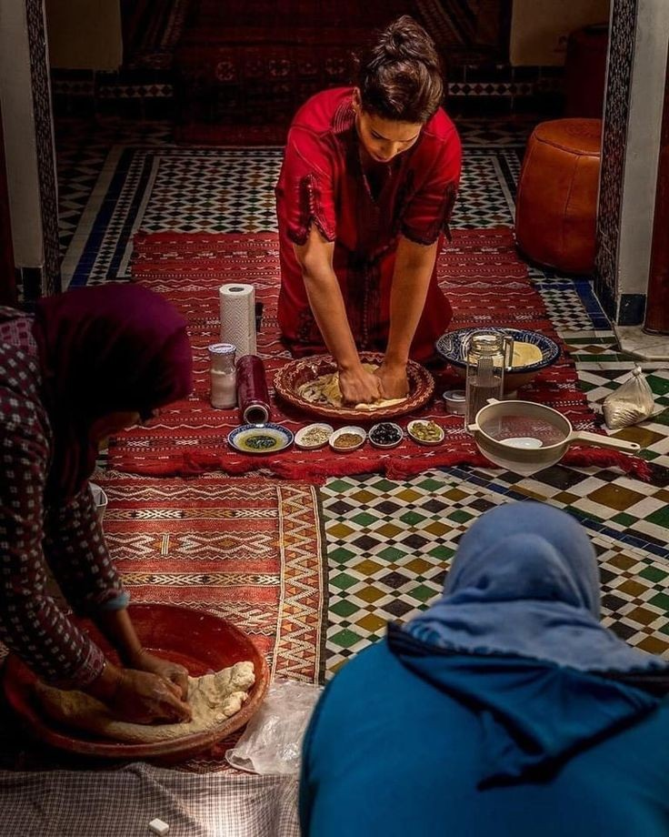

Sublime Flavor:
Empowering Women Through Taste
In the bustling heart of Agadir, a coastal gem nestled in the vibrant tapestry of Moroccan culture, three enterprising young women are crafting more than just delectable dishes—they're crafting a movement. Kaoutar, Fatima, and Sara, bound by their passion for Moroccan cuisine and a shared dream of entrepreneurship, have woven together a culinary haven known as Sublime Flavor.
In the bustling heart of Agadir, a coastal gem nestled in the vibrant tapestry of Moroccan culture, three enterprising young women are crafting more than just delectable dishes—they're crafting a movement. Kaoutar, Fatima, and Sara, bound by their passion for Moroccan cuisine and a shared dream of entrepreneurship, have woven together a culinary haven known as Sublime Flavor.
At Sublime Flavor, every dish tells a story—a story of tradition, innovation, and the indomitable spirit of women breaking barriers in the culinary world. Drawing inspiration from cherished family recipes passed down through generations, Kaoutar, Fatima, and Sara infuse each creation with a dash of nostalgia and a sprinkle of modern flair.
But Sublime Flavor is more than just a restaurant; it's a celebration of empowerment and inclusion. In a society where genderroles often dictate opportunities, Kaoutar, Fatima, and Sara are carving out a space where women can thrive and showcase their talents on their own terms.
Their journey began with a shared vision—to introduce the world to the sublime flavors of Moroccan cuisine while challenging stereotypes and championing female entrepreneurship. Armed with determination and a deep-seated love for their culinary heritage, they transformed that vision into reality.
From the moment guests step through the doors of Sublime Flavor, they're enveloped in an atmosphere that transcends mere dining. Vibrant hues dance across the walls, echoing the vivacity of Moroccan street markets, while the aroma of spices fills the air, teasing the senses and igniting anticipation.
The menu, a carefully curated symphony of flavors, pays homage to Morocco's rich culinary tapestry. Traditional dishes are reinvented with a contemporary twist, offering a tantalizing fusion of the familiar and the unexpected. Each bite is a revelation—a harmony of textures and tastes that leaves an indelible impression on the palate.
But beyond the culinary delights, Sublime Flavor serves as a beacon of hope and inspiration for aspiring female chefs and entrepreneurs. Kaoutar, Fatima, and Sara are not just creating exceptional food; they're paving the way for future generations of women to follow their dreams, defy expectations, and leave their mark on the world.
Through their unwavering dedication and entrepreneurial spirit, these three trailblazing women are proving that the kitchen is not just a place for cooking—it's a platform for empowerment. With every dish they create, they're not only tantalizing taste buds but also challenging the status quo and reshaping perceptions.

In a world where barriers still exist for women in the culinary industry, Sublime Flavor stands as a testament to the power of passion, perseverance, and sisterhood. Kaoutar, Fatima, and Sara are not just culinary innovators; they're agents of change, using their talents to inspire, uplift, and empower women everywhere, one sublime flavor at a time.